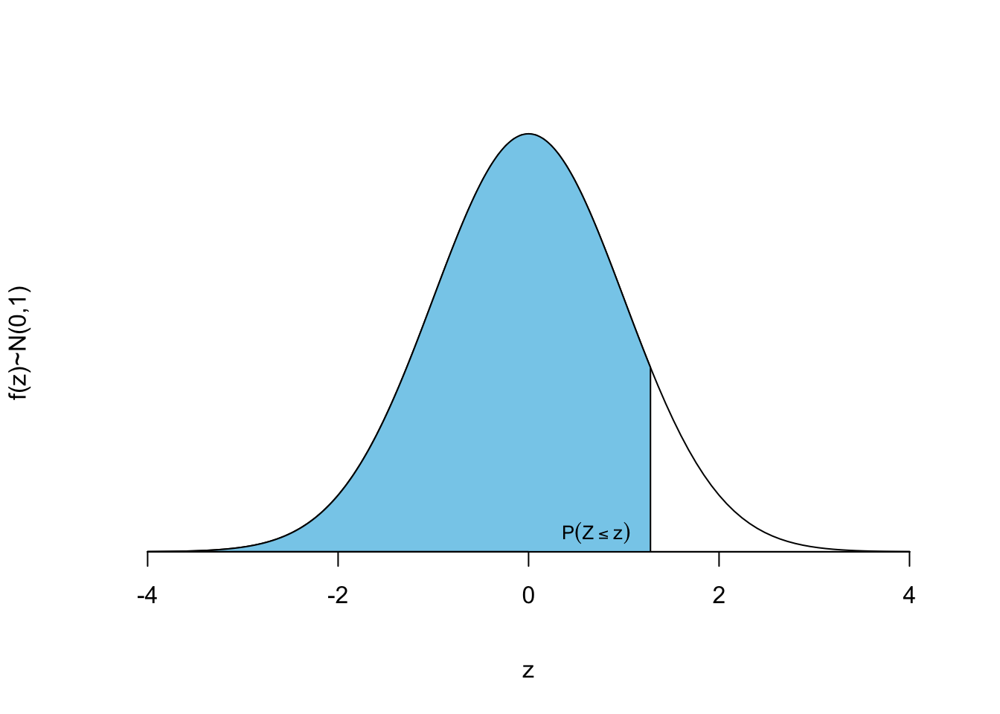

Apéndice C Tablas estadísticas
C.1 Distribución normal
La siguiente tabla contiene la probabilidad de la cola inferior de la distribución normal estándar \(Z\sim N(0;1)\), es decir \(F(z)=P[Z\leq z].\).

| z | 0.00 | 0.01 | 0.02 | 0.03 | 0.04 | 0.05 | 0.06 | 0.07 | 0.08 | 0.09 |
|---|---|---|---|---|---|---|---|---|---|---|
| 0.0 | 0.5000 | 0.5040 | 0.5080 | 0.5120 | 0.5160 | 0.5199 | 0.5239 | 0.5279 | 0.5319 | 0.5359 |
| 0.1 | 0.5398 | 0.5438 | 0.5478 | 0.5517 | 0.5557 | 0.5596 | 0.5636 | 0.5675 | 0.5714 | 0.5753 |
| 0.2 | 0.5793 | 0.5832 | 0.5871 | 0.5910 | 0.5948 | 0.5987 | 0.6026 | 0.6064 | 0.6103 | 0.6141 |
| 0.3 | 0.6179 | 0.6217 | 0.6255 | 0.6293 | 0.6331 | 0.6368 | 0.6406 | 0.6443 | 0.6480 | 0.6517 |
| 0.4 | 0.6554 | 0.6591 | 0.6628 | 0.6664 | 0.6700 | 0.6736 | 0.6772 | 0.6808 | 0.6844 | 0.6879 |
| 0.5 | 0.6915 | 0.6950 | 0.6985 | 0.7019 | 0.7054 | 0.7088 | 0.7123 | 0.7157 | 0.7190 | 0.7224 |
| 0.6 | 0.7257 | 0.7291 | 0.7324 | 0.7357 | 0.7389 | 0.7422 | 0.7454 | 0.7486 | 0.7517 | 0.7549 |
| 0.7 | 0.7580 | 0.7611 | 0.7642 | 0.7673 | 0.7704 | 0.7734 | 0.7764 | 0.7794 | 0.7823 | 0.7852 |
| 0.8 | 0.7881 | 0.7910 | 0.7939 | 0.7967 | 0.7995 | 0.8023 | 0.8051 | 0.8078 | 0.8106 | 0.8133 |
| 0.9 | 0.8159 | 0.8186 | 0.8212 | 0.8238 | 0.8264 | 0.8289 | 0.8315 | 0.8340 | 0.8365 | 0.8389 |
| 1.0 | 0.8413 | 0.8438 | 0.8461 | 0.8485 | 0.8508 | 0.8531 | 0.8554 | 0.8577 | 0.8599 | 0.8621 |
| 1.1 | 0.8643 | 0.8665 | 0.8686 | 0.8708 | 0.8729 | 0.8749 | 0.8770 | 0.8790 | 0.8810 | 0.8830 |
| 1.2 | 0.8849 | 0.8869 | 0.8888 | 0.8907 | 0.8925 | 0.8944 | 0.8962 | 0.8980 | 0.8997 | 0.9015 |
| 1.3 | 0.9032 | 0.9049 | 0.9066 | 0.9082 | 0.9099 | 0.9115 | 0.9131 | 0.9147 | 0.9162 | 0.9177 |
| 1.4 | 0.9192 | 0.9207 | 0.9222 | 0.9236 | 0.9251 | 0.9265 | 0.9279 | 0.9292 | 0.9306 | 0.9319 |
| 1.5 | 0.9332 | 0.9345 | 0.9357 | 0.9370 | 0.9382 | 0.9394 | 0.9406 | 0.9418 | 0.9429 | 0.9441 |
| 1.6 | 0.9452 | 0.9463 | 0.9474 | 0.9484 | 0.9495 | 0.9505 | 0.9515 | 0.9525 | 0.9535 | 0.9545 |
| 1.7 | 0.9554 | 0.9564 | 0.9573 | 0.9582 | 0.9591 | 0.9599 | 0.9608 | 0.9616 | 0.9625 | 0.9633 |
| 1.8 | 0.9641 | 0.9649 | 0.9656 | 0.9664 | 0.9671 | 0.9678 | 0.9686 | 0.9693 | 0.9699 | 0.9706 |
| 1.9 | 0.9713 | 0.9719 | 0.9726 | 0.9732 | 0.9738 | 0.9744 | 0.9750 | 0.9756 | 0.9761 | 0.9767 |
| 2.0 | 0.9772 | 0.9778 | 0.9783 | 0.9788 | 0.9793 | 0.9798 | 0.9803 | 0.9808 | 0.9812 | 0.9817 |
| 2.1 | 0.9821 | 0.9826 | 0.9830 | 0.9834 | 0.9838 | 0.9842 | 0.9846 | 0.9850 | 0.9854 | 0.9857 |
| 2.2 | 0.9861 | 0.9864 | 0.9868 | 0.9871 | 0.9875 | 0.9878 | 0.9881 | 0.9884 | 0.9887 | 0.9890 |
| 2.3 | 0.9893 | 0.9896 | 0.9898 | 0.9901 | 0.9904 | 0.9906 | 0.9909 | 0.9911 | 0.9913 | 0.9916 |
| 2.4 | 0.9918 | 0.9920 | 0.9922 | 0.9925 | 0.9927 | 0.9929 | 0.9931 | 0.9932 | 0.9934 | 0.9936 |
| 2.5 | 0.9938 | 0.9940 | 0.9941 | 0.9943 | 0.9945 | 0.9946 | 0.9948 | 0.9949 | 0.9951 | 0.9952 |
| 2.6 | 0.9953 | 0.9955 | 0.9956 | 0.9957 | 0.9959 | 0.9960 | 0.9961 | 0.9962 | 0.9963 | 0.9964 |
| 2.7 | 0.9965 | 0.9966 | 0.9967 | 0.9968 | 0.9969 | 0.9970 | 0.9971 | 0.9972 | 0.9973 | 0.9974 |
| 2.8 | 0.9974 | 0.9975 | 0.9976 | 0.9977 | 0.9977 | 0.9978 | 0.9979 | 0.9979 | 0.9980 | 0.9981 |
| 2.9 | 0.9981 | 0.9982 | 0.9982 | 0.9983 | 0.9984 | 0.9984 | 0.9985 | 0.9985 | 0.9986 | 0.9986 |
| 3.0 | 0.9987 | 0.9987 | 0.9987 | 0.9988 | 0.9988 | 0.9989 | 0.9989 | 0.9989 | 0.9990 | 0.9990 |
| 3.1 | 0.9990 | 0.9991 | 0.9991 | 0.9991 | 0.9992 | 0.9992 | 0.9992 | 0.9992 | 0.9993 | 0.9993 |
| 3.2 | 0.9993 | 0.9993 | 0.9994 | 0.9994 | 0.9994 | 0.9994 | 0.9994 | 0.9995 | 0.9995 | 0.9995 |
| 3.3 | 0.9995 | 0.9995 | 0.9995 | 0.9996 | 0.9996 | 0.9996 | 0.9996 | 0.9996 | 0.9996 | 0.9997 |
| 3.4 | 0.9997 | 0.9997 | 0.9997 | 0.9997 | 0.9997 | 0.9997 | 0.9997 | 0.9997 | 0.9997 | 0.9998 |
| 3.5 | 0.9998 | 0.9998 | 0.9998 | 0.9998 | 0.9998 | 0.9998 | 0.9998 | 0.9998 | 0.9998 | 0.9998 |
| 3.6 | 0.9998 | 0.9998 | 0.9999 | 0.9999 | 0.9999 | 0.9999 | 0.9999 | 0.9999 | 0.9999 | 0.9999 |
| 3.7 | 0.9999 | 0.9999 | 0.9999 | 0.9999 | 0.9999 | 0.9999 | 0.9999 | 0.9999 | 0.9999 | 0.9999 |
| 3.8 | 0.9999 | 0.9999 | 0.9999 | 0.9999 | 0.9999 | 0.9999 | 0.9999 | 0.9999 | 0.9999 | 0.9999 |
| 3.9 | 1.0000 | 1.0000 | 1.0000 | 1.0000 | 1.0000 | 1.0000 | 1.0000 | 1.0000 | 1.0000 | 1.0000 |
C.2 Resumen modelos de distribución de probabilidad
C.2.1 Distribuciones discretas más importantes
| Distribución | Masa de probabilidad | Esperanza | Varianza |
|---|---|---|---|
| \(\text{Bernoulli}\\ \mathit{Ber}(p)\) | \(X = \begin{cases} 1 & \mbox{ con probabilidad } p \\ 0 & \mbox{ con probabilidad } 1-p \end{cases}\) | \(p\) | \(p(1-p)\) |
| \(\text{Binomial}\\ \mathit{Bin}(n;p)\) | \(P[X = x] = \binom{n}{x}\cdot p^x \cdot (1-p)^{(n-x)};\\ x = 0, 1, \ldots, n\) | \(n\cdot p\) | \(n \cdot p\cdot (1-p)\) |
| \(\text{Geométrica}\\ \mathit{Ge}(p)\) | \(P[X = x] = p \cdot (1-p)^{x};\\ x = 0, 1, \ldots, \infty\) | \(\frac{1-p}{p}\) | \(\frac{1-p}{p^2}\) |
| \(\text{Binomial negativa}\\ \mathit{BN}(r;p)\) | \(P[X = x] =\binom{x+c-1}{x}\cdot p^c \cdot (1-p)^{x};\\ x = 0, 1, 2, \ldots, \infty\) | \(\frac{r \cdot (1-p)}{ p}\) | \(\frac{r\cdot(1-p)}{p^2}\) |
| \(\text{Poisson}\\ \mathit{Poiss}(\lambda)\) | \(P[X = x] = \frac{e^{-\lambda}\lambda^x}{x!};\\ x = 0, 1, \ldots \infty\) | \(\lambda\) | \(\lambda\) |
| \(\text{Hipergeométrica}\\ \mathit{HG}(N; M; N)\) | \(P[X = x] = \frac{\binom{N-M}{n-x}\cdot \binom{M}{x}}{\binom{N}{n}};\\ \max{(0, n+M-N)} \leq x \leq \min{(M,n)}\) | \(M\cdot \frac{n}{N}\) | \(\frac{M\cdot(N-M)\cdot n\cdot (N-n)}{N^2\cdot(N-1)}\) |
C.2.2 Distribuciones continuas más importantes
| Distribución | Densidad/Distribución | Esperanza | Varianza |
|---|---|---|---|
| \(\text{Uniforme}\\ \mathit{U}(a;b)\) | \(f(x) = \begin{cases} \frac{1}{b-a} & \text{si } a \leq x \leq b\ 0 & \\text{resto} \end{cases} \\ a<x<b\) | \(\frac{a+b}{2}\) | \(\frac{(b-a)^2}{12}\) |
| \(\text{Exponencial}\\ \mathit{Exp}(\beta)\) | \(f(x) = \beta e^{-\beta x},\; x > 0\\F(x)=\int_{-\infty}^xf(t)dt=1-e^{-\beta x}, \; x > 0\) | \(\frac 1 \beta\) | \(\frac{1}{\beta^2}\) |
| \(\text{Normal}\\ \mathit{N}(\mu; \sigma)\) | \(f(x) = \frac{1}{\sqrt{2\pi\sigma^2}} e^{-\frac{(x-\mu)^2}{2\sigma^2}},\;-\infty < x < \infty\) | \(\mu\) | \(\sigma^2\) |